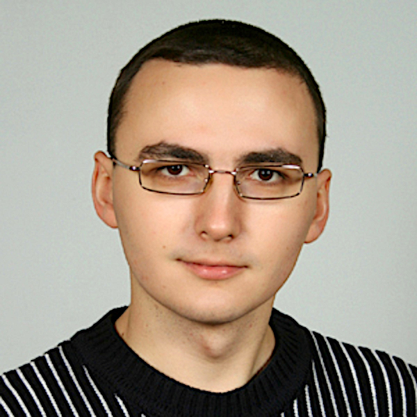
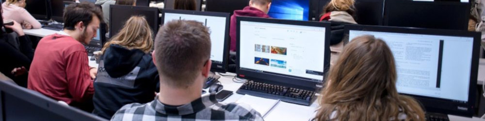
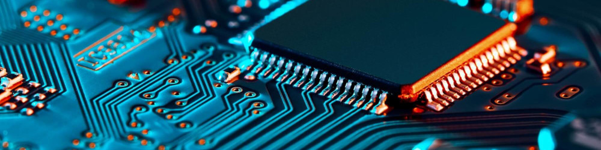

Журавель РоманЛаскаво просимо на мій сайт викладача. Тут ви знайдете інформацію про мене та мою педагогічну діяльність. |
 |
Дізнатися більше Дізнатися більше Дізнатися більше
Освіта2009, Сумський державний університет, кваліфікація магістр з електронних систем 2005, Прилуцький агротехнічний технікум, кваліфікація технік-електрик Посади2010-2025, викладач спеціальних дисциплін 2018-2021, голова циклової комісії спеціальних комп'ютерних дисциплін 2006-2010, завідуючий інформаційним центром коледжу 2005-2010, лаборант на відділенні "Електрифікація і автоматизація сільського господарства" |
 |
Дисципліни2024-2025, Основи цифрового керування та програмування мікроконтролерів 2024-2025, Інформаційні технології 2023-2025, Комп'ютерні мережі 2016-2025, Архітектура комп'ютерів 2016-2025, Алгоритми та методи обчислень 2011-2018, 2024-2025 Основи автоматики 2018-2024, Основи програмної інженерії 2017-2021, 2023-2024, Організація баз даних 2011-2020, Комп'ютери та комп'ютерні технології 2011-2015, Інформаційні та комп'ютерні технології 2010, Основи інформатики та обчислювальної техніки |
 |
2020, В лабораторії "Контролерної техніки" створив лабораторні стенди на базі контролерів Unitronix V700 і написав програми до них для вивчення принципів функціонування контролерної техніки.
2014, Обладнав і оформив "Кабінет комп’ютерної техніки" для проведення занять зі спеціальності 123 Комп'ютерна інженерія. На той час перший кабінет на нововідкритому відділенні.
2007, Організував інформаційний центр в коледжі для всебічної IT підтримки інфраструктури коледжу. На даний момент цей підрозділ еволюціонував і займається веденням бази ЄДЕБО зі сторони коледжу.
Зв'язок зі мною roman.zhuravel@ptfc.ukr.education